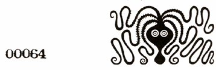

|
ERISIAN MAGIC RITUAL - THE TURKEY CURSE
Revealed by the Apostle Dr. Van Van Mojo as a specific counter to the evil Curse of Greyface, THE TURKEY CURSE is here passed on to Erisians everywhere for their just protection.
The Turkey Curse works. It is firmly grounded on the fact that Greyface and his followers absolutely require an aneristic setting to function and that a timely introduction of eristic vibrations will neutralize their foundation. The Turkey Curse is designed solely to counteract negative aneristic vibes and if introduced into a neutral or positive aneristic setting (like a poet working out word rhythms) it will prove harmless, or at worst, simply annoying. It is not designed for use against negative eristic vibes, although it can be used as an eristic vehicle to introduce positive vibes into a misguided eristic setting. In this instance, it would be the responsibility of the Erisian Magician to manufacture the positive vibrations if results are to be achieved. CAUTION- all magic is powerful and requires courage and integrity on the part of the magician. This ritual, if misused, can backfire. Positive motivation is essential for self-protection.
TO PERFORM THE TURKEY CURSE:
Take a foot stance as if you were John L. Sullivan preparing for fisticuffs.
Face the particular greyfaced you wish to short-circuit, or towards the
direction of the negative aneristic vibration that you wish to neutralize.
Begin waving your arms in any elaborate manner and make motions with your
hands as though you were Mandrake feeling up a sexy giantess. Chant, loudly
and clearly:
GOBBLE, GOBBLE, GOBBLE, GOBBLE, GOBBLE!
The results will be instantly apparent.

|